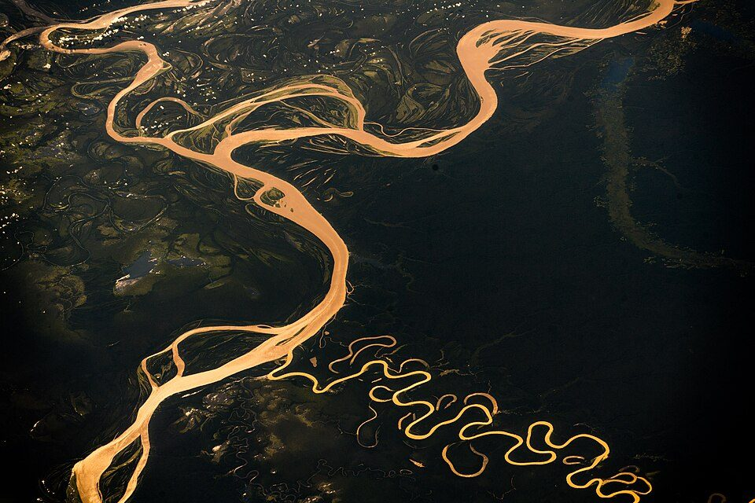

Planet Earth · 6 articles
Oceans and water
Seas, currents, tides, life in the deep, rivers, lakes, glaciers and the endless journey of every drop of water.
Seen from space, our planet ought to be called Ocean: water covers 71% of its surface. Without it there would be no life, no climate as we know it and no landscapes carved by rivers and glaciers. This section follows water in all its forms.
- The oceansFive oceans that are really one: they cover 71% of the planet, produce half the oxygen we breathe and remain largely unexplored.
 Currents and tidesRivers within the sea that spread heat around the planet, and tides that rise and fall twice a day, pulled by the Moon.
Currents and tidesRivers within the sea that spread heat around the planet, and tides that rise and fall twice a day, pulled by the Moon. Life in the deep seaTotal darkness, cold and crushing pressure: even so, the deep sea is full of creatures that make their own light.
Life in the deep seaTotal darkness, cold and crushing pressure: even so, the deep sea is full of creatures that make their own light.
Rivers and lakesThe Nile and the Amazon, Lake Baikal, the great waterfalls and Spain's rivers: the fresh water that shapes the continents. Glaciers and iceAntarctica, Greenland and mountain glaciers hold almost 70% of the planet's fresh water. And they are changing fast.
Glaciers and iceAntarctica, Greenland and mountain glaciers hold almost 70% of the planet's fresh water. And they are changing fast. The water cycleEvaporation, clouds, rain, rivers and aquifers: water's endless journey and why fresh water is a scarce treasure.
The water cycleEvaporation, clouds, rain, rivers and aquifers: water's endless journey and why fresh water is a scarce treasure.